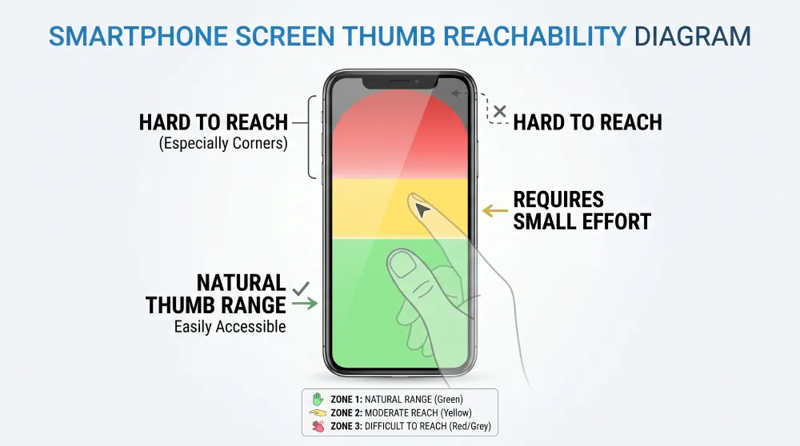

Picture the scene. It's almost ten at night. Someone is lying on their couch, phone propped against a pillow, the glow of the screen lighting up their face. They're scrolling through a few tabs they opened in a hurry after dinner. One of those tabs is your website.
This person hasn't been studying you for hours. They've been thinking about whether to reach out to someone for weeks, maybe months. Tonight they finally decided to look. The device in their hand — the one that's about to decide whether they send you a message — is a few-inch screen with a tired thumb hovering over it.
This is how your clients find you now. Somewhere between 65% and 80% of the traffic to a consultant, therapist, or coach's website comes from a phone. In some fields the number gets closer to 85%. And yet most of these sites are still designed and signed off on 27-inch desktop monitors. That gap is where inquiries quietly disappear.
What Mobile-First Actually Means
The phrase has been used so often it has mostly lost its meaning. For many professionals who paid for a "mobile-friendly" website, the test was simple: open the page on a phone, scroll around a bit, confirm that nothing looks broken. If the logo sits at the right size and the buttons tap, you call it done.
But that isn't mobile-first. That's a desktop design trying to squeeze itself onto a smaller screen.
Real mobile-first design means the phone experience is your priority. You stop asking how to shrink the content down, and you start asking what the person looking at you through their phone actually needs. A desktop site assumes time and patience. A mobile site has to handle distraction, fatigue, and a visitor who's ready to close the tab at the first sign of friction.
The Thumb Zone
There's a concept that quietly decides whether your client ever gets in touch, and it's called the thumb zone. When someone holds a phone with one hand, the thumb only comfortably reaches the bottom portion of the screen. The top corners take real effort.

A "Book an Appointment" button sitting high on the screen looks great on a laptop, but on a phone it's the least accessible spot on the page. The visitor has to shift their grip or stretch. On mobile, every small friction like that works against you. The fix is rhythm: calls to action need to show up naturally, right where the user's hand already is. A quiet little bar at the bottom of the screen can double the chances of someone reaching out — as long as it doesn't block the phone's own navigation.
Respect for Their Eyes and Their Time
We also have to think about context. If someone lands on your site late at night and your page is blindingly white while their phone is set to dark mode, their first reaction is going to be annoyance. Respecting dark mode isn't a luxury. It's basic comfort.
The same goes for speed. If the page takes too long to load, the visitor feels like the whole experience is heavy, and they leave. Oversized images that haven't been optimized for mobile burn through battery and data — leaving a negative first impression before anyone has even read your opening sentence.
The Contact Form Needs to Be Simple
On a desktop, a form with a lot of fields is mildly tedious. On a phone, it's a mountain. Every field you ask for summons a keyboard that covers half the screen. The ideal mobile form is almost insultingly simple: a name, a phone number, and one field for the message. Anything else can come up in the first call.
Small details make the difference. The keyboard should automatically switch to numeric when the visitor is typing a phone number. Text should be at least 16 pixels so the phone doesn't auto-zoom and throw the user off. These aren't technical choices. They're how you tell the client that you were thinking about them.
Booking Without Obstacles
For anyone who offers direct appointment booking, the calendar is usually where things quietly fall apart. A lot of booking systems get squeezed awkwardly onto small screens. The client ends up pinch-zooming just to find an available time, and eventually gives up.
A well-designed booking flow automatically detects the visitor's time zone and shows available days clearly. The confirmation screen has to feel reassuring. When someone books an appointment for something personal — like therapy — they need to feel certain that the booking actually went through.
Physical Contact with the Screen
On mobile, your website is something the other person literally touches.
- Buttons should be at least 48 by 48 pixels so the wrong link doesn't get tapped by accident.
- The phone number should be a link, so it calls with one tap.
- The email should open the mail app directly.
Every time you force someone to copy a phone number and switch apps, you're adding one more obstacle between them and you.
The Real Cost of Overlooking This
We often treat mobile UX as something technical — something the developer handles. In reality, it's a matter of communication. An excellent professional can lose clients simply because their form is awkward on a phone. Those people will never email you to tell you the site gave them trouble. They'll just leave.
And the ones you lose are often the ones who needed you the most. They're the people who looked you up on the commute home or from bed — the ones who needed one small signal to feel confident enough to reach out.
The Heart of the Shift
Mobile-first design, at its core, is an act of care. It means you understand where the person looking for you actually is, and you've prepared your space for them.
Your website doesn't need to be impressive. It needs to be effortless. If someone can find you at ten at night, understand what you offer, and send you a message in under a minute, you've done what you set out to do.
That's where 70% of your future clients are. Design for them, and everything else takes care of itself.
Does your website treat mobile visitors as a priority, or as an afterthought?
At Evida Studio, we build digital presences for service professionals around the person who's browsing one-handed, in a hurry, but still hoping to find the right fit.
Let's Review Your Website